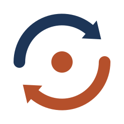

Pular para o conteúdo

Ciclo
Local
Início
Perfil
Coletas
Resultados
Olá, Cidadão
CPF ***.123.456-**
O que você quer fazer hoje?
Quero doar recicláveis
Para quem tem material em casa
Quero recolher materiais
Para quem faz a coleta
Voltar para o início